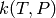

There are three parts to a MEASURE input file, giving the species, path reaction, and algorithm parameters. The species section must come before the reaction section. Before discussing each of these sections, a brief word on the input file syntax will be provided.
The format of MEASURE input files is based on Python syntax. In fact, MEASURE input files are valid Python source code, and this is used to facilitate reading of the file.
Each section is made up of one or more function calls, where parameters are specified as text strings, numbers, or objects. Text strings must be wrapped in either single or double quotes. There are two ways to specify numeric quantities:
Note
MEASURE uses the quantities package to convert your numeric parameters into SI units, and therefore inherits all of the idiosyncracies from that package. In particular, the quantities package does not follow the SI convention that all units after the circumflex are in the denominator. For example, J/mol*K would be interpreted as (J/mol)*K rather than J/(mol*K). Thus we recommend using parentheses where necessary to make your intentions explicit.
Each species in the network must be specified using a species() block. This includes all unimolecular isomers, bimolecular reactants and products, and the bath gas(es). A species that appears in multiple bimolecular channels need only be specified with a single species() block.
There are a number of required and optional parameters associated with a species block:
| Parameter | Required? | Description |
|---|---|---|
| label | all species | A unique string label used as an identifier |
| E0 | all species | The ground-state energy (including zero-point energy) |
| states | isomers, reactants | The molecular degrees of freedom (see below) |
| lennardJones | isomers, bath gas | The Lennard-Jones parameters, using a LennardJones call |
| molecularWeight | isomers, bath gas | The molecular weight |
| thermo | The macroscopic thermodynamic parameters | |
| SMILES | The SMILES string describing the chemical structure | |
| InChI | The InChI string describing the chemical structure |
If you specify the molecular structure via SMILES or InChI strings and omit the molecular weight, the code will compute the molecular weight for you.
The states parameter is required for all unimolecular isomers and all bimolecular reactant channels. When specifying the states parameter, use a States() function with the following parameters:
| Parameter | Description |
|---|---|
| rotationalConstants | A list of the external rotational constants |
| symmetry | The external symmetry number |
| frequencies | A list of the vibrational frequencies |
| frequencyScaleFactor | The frequency scale factor to use (1.0 if not specified) |
| hinderedRotors | A list of simple Pitzer hindered rotors, specified as 3-tuples (frequency, barrier, symmetry) |
| spinMultiplicity | The ground-state spin multiplicity (degeneracy) |
If states is specified and thermo is not, then the thermodynamic parameters will be automatically computed. This is recommended unless you have thermodynamic data that you believe to be more accurate than the molecular degrees of freedom data. You can use any of the thermodynamics models in the chempy.thermo module (from the ChemPy package); see that package for more information on the available models and their syntax.
The following is an example of a typical species item, based on the acetylperoxy radical :
species(
label="acetylperoxy",
SMILES="CC(=O)O[O]",
E0=(-144.766,"kJ/mol"),
states=States(
rotationalConstants=([54.2978, 104.836, 156.049], "amu/angstrom^2"),
symmetry=1,
frequencies=([321.607, 503.468, 539.885, 547.148, 731.506, 979.187, 1043.98, 1126.42, 1188.62, 1399.43, 1458.2, 1463.42, 1881.7, 3055.28, 3115.45, 3155.14], "cm^-1"),
frequencyScaleFactor=1.0,
hinderedRotors=[
((7.38359,"amu*angstrom^2"), (25.5921,"kJ/mol"), 1),
((2.94725,"amu*angstrom^2"), (5.11105,"kJ/mol"), 3),
],
spinMultiplicity=2,
),
thermo=ThermoGAModel(
Tdata=([303.231, 385.553, 467.875, 550.197, 632.519, 714.841, 797.163, 879.485, 961.807, 1044.13, 1126.45, 1208.77, 1291.09, 1373.42, 1455.74, 1538.06, 1620.38, 1702.7, 1785.03, 1867.35], "K"),
Cpdata=([80.917, 92.4545, 102.856, 111.821, 119.406, 125.81, 131.243, 135.887, 139.882, 143.341, 146.352, 148.984, 151.294, 153.33, 155.129, 156.725, 158.145, 159.413, 160.548, 161.567], "J/(mol*K)"),
H298=(-127.614, "kJ/mol"),
S298=(314.403, "J/(mol*K)"),
),
lennardJones=LennardJones(sigma=(5.09e-10,"m"), epsilon=(6.53048e-21,"J")),
molecularWeight=(75.0434,"g/mol"),
)
Each path reaction - a reaction directly connecting two molecular configurations in the network - is specified using a reaction() block. The following parameters are available:
| Parameter | Required? | Description |
|---|---|---|
| reactants | All reactions | A list of strings indicating the labels of the reactant species |
| products | All reactions | A list of strings indicating the labels of the product species |
| transitionState | All reactions | Information about the transition state, using a TransitionState() block; see below |
| reversible | True (default) if the reaction is reversible, False if not | |
| kinetics | The high pressure-limit kinetics for the reaction |
The direction and reversibility of the reactions determine how bimolecular configurations are divided into reactants. If the bimolecular configuration is listed as the reactants or reversible is True, the configuration is set as a reactant channel. If the bimolecular configuration is listed as the products and reversible is False, the configuration is set as a product channel.
The type of information specified with each path reaction determines how the microcanonical rate coefficient is computed:
 values. (The molecular degrees of
freedom information is given in the same way as for species.) values.
values. (The molecular degrees of
freedom information is given in the same way as for species.) values.MEASURE will automatically use the best method that it can, so if you provide both the molecular degrees of freedom and the high pressure-limit kinetics - as in the example below - RRKM theory will be used.
The following is an example of a typical reaction item, based on the reaction :
reaction(
reactants=['acetylperoxy'],
products=['ketene', 'hydroperoxyl'],
reversible=False,
kinetics=Arrhenius(
A=(2.62e9,'s^-1'),
n=1.24,
Ea=(34.06,'kcal/mol')
),
transitionState=TransitionState(
E0=(0.6,'kcal/mol'),
states=States(
rotationalConstants=([55.4256, 136.1886, 188.2442], 'amu*angstrom^2'),
symmetry=1,
frequencies=([59.306, 205.421, 354.483, 468.861, 482.875, 545.574, 657.825, 891.898, 1023.947, 1085.617, 1257.494, 1316.937, 1378.552, 1688.566, 2175.346, 3079.822, 3154.325], 'cm^-1'),
frequencyScaleFactor=0.99,
hinderedRotors=[],
spinMultiplicity=2,
),
frequency=(-1048.9950,'cm^-1'),
)
)
The collision model to use when constructing the master equation is specified using a collisionModel() block, where you must specify both the type of model, the value of any required parameters as a list of quantities, and a list of tuples specifying the labels of the species in the bath gas and their relative mole fractions. The collision models available are:
single exponential down - Specify alpha0, T0 and n for the average energy transferred in a deactiving collision
An example of a typical collisionModel() block is given below:
collisionModel(
type='single exponential down',
parameters={
'alpha0': (0.5718,'kcal/mol'),
'T0': (300,'K'),
'n': 0.85,
},
bathGas={
'nitrogen': 1.0,
}
)
MEASURE will compute the  values on a grid of temperature and pressure points. The discussion below is for temperatures, but applies identically to pressures as well.
There are two ways to specify the temperature range using a temperatures() block:
Give an explicit list of temperature points using the Tlist parameter:
temperatures(Tlist=([300.0, 400.0, 500.0, 600.0, 700.0, 800.0, 900.0, 1000.0],'K'))
Give the minimum temperature Tmin, maximum temperature Tmax, and number of temperatures count to use:
temperatures(Tmin=(300.0,'K'), Tmax=(2000.0,'K'), count=8)
MEASURE will automatically choose the intermediate temperatures based on the interpolation model you wish to fit. This is the recommended approach.
An example of typical temperatures() and pressures() blocks is given below:
temperatures(Tmin=(300.0,'K'), Tmax=(2000.0,'K'), count=8)
pressures(Pmin=(0.01,'bar'), Pmax=(100.0,'bar'), count=5)
Use an energies() block to specify information about the energies to use. The required parameters are the minimum grain size dE and/or the minimum number of grains count. MEASURE will use whichever of these results in a more accurate calculation.
Note
You do not need to specify the minimum and maximum energies, as MEASURE can determine these automatically.
A typical energies() block is given below:
energies(dE=(0.25,'kcal/mol'), count=250)
Use a method() block to specify the approximate method to use when computing values from the full master equation. There are currently three methods available: modified strong collision (MSC), reservoir state (RS), and chemically-significant eigenvalues (CSE). The details of each of these methods is provided in the MEASURE Theory Guide. In short: MSC is the fastest but least accurate, RS usually provides a good balance of speed and accuracy, while CSE is the most accurate but is slow and not robust. Currently we recommend using MSC during initial explorations, then RS when more accurate numbers are needed.
An example method() block is given below:
method('reservoir state')
Finally, use a model() block to specify the interpolation model to fit to the computed values. Currently there are two such models available:
Chebyshev polynomials. You must also provide the number of terms to use in the temperature and pressure domains, respectively. The following example uses six Chebyshev terms in temperature and four in pressure:
model('chebyshev', 6, 4)
You should use fewer terms than the number of grid points in each direction, and should allow MEASURE to choose the intermediate temperature and pressure grid points.
Pressure-dependent Arrhenius. A modified Arrhenius expression is fit at each pressure; no additional parameters are required:
model('pdeparrhenius')
Of the two, Chebyshev polynomials are more flexible and therefore more likely to fit the complex behavior of large networks. However, support for these models varies in other chemical kinetics packages.
Perhaps the best way to learn the input file syntax is by example. To that end, a number of example input files and their corresponding output have been given in the examples directory.